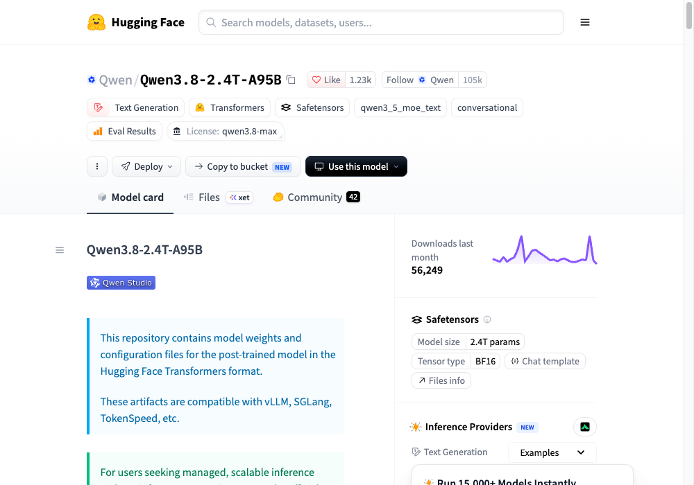
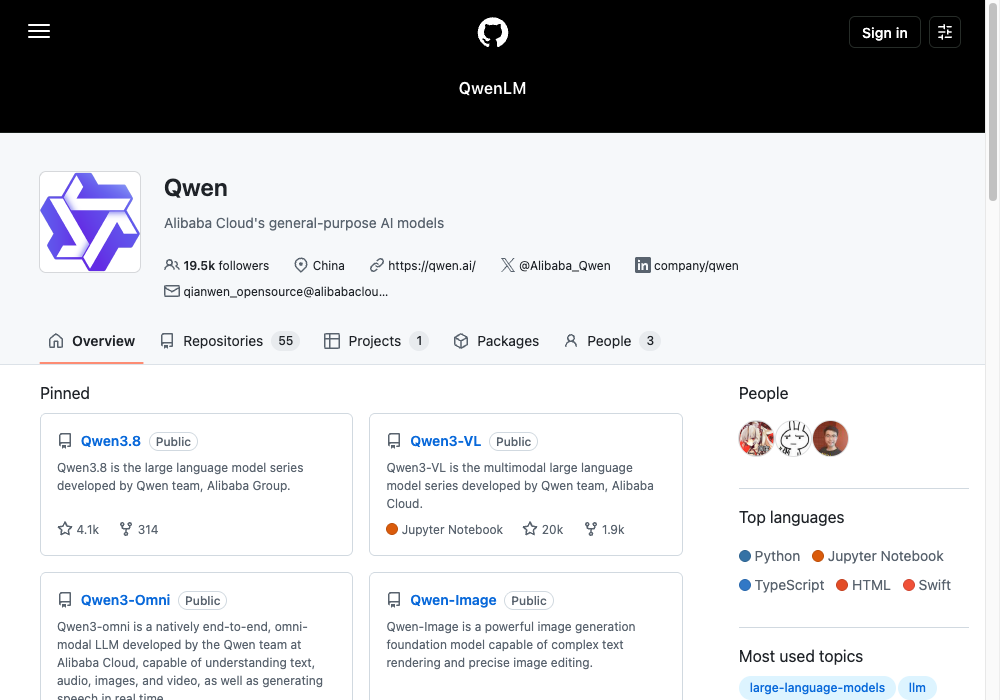

Qwen just killed Claude Fable 5. It's free. It's unlimited.
Alibaba dropped Qwen3.8-Max on August 3rd and claimed it trades blows with Claude and GPT. Three real benchmarks, three different outcomes — and the weights are now public.
Read the whole thing before you switch. Qwen wins two of the three headline benchmarks and loses the third badly. Sections 02 and 03 are both true at the same time.
Here's the real scoreboard.
Three real benchmarks, three different stories.
Score out of 100. Qwen takes PaperBench outright, edges Claude on Terminal-Bench while losing to GPT, and drops 12 points behind Claude on SWE-bench Pro.
It genuinely beats Claude here.
PaperBench — reproducing real research work.
Qwen scores 93.0 against Claude Fable 5's 88.8 and GPT-5.6 Sol's 90.5. It beats both of them outright, and Opus 4.8 sits far back at 80.3. That's a real gap, not a rounding error — and it's the benchmark closest to "read this paper and rebuild it."
It also takes Terminal-Bench 2.1 off Claude — 86.6 to 84.6 — though GPT-5.6 Sol wins that one at 88.8.
It still loses the real job.
SWE-bench Pro and FrontierSWE — actual coding work.
On SWE-bench Pro, Qwen scores 67.7 against Claude's 80.0. On FrontierSWE it's 73.5 against 88.8. Those gaps are wide open, and they're the benchmarks that look most like the work you'd actually hand a model on a Tuesday.
Across the nine coding-agent benchmarks in Alibaba's own table, Fable 5 wins six and Qwen wins two (with one Claude didn't post a score for). The headline is real on research work; on shipping code it isn't there yet.
Now you can run it yourself.
The weights went public on August 12th.

Alibaba open-sourced a Max-class model for the first time, as Qwen3.8-2.4T-A95B — 2.4 trillion parameters with about 95 billion active per token. The artifacts work with vLLM, SGLang and TokenSpeed.
hf download Qwen/Qwen3.8-2.4T-A95B
Before you start that download — the two things the headline leaves out:
1. It is not a small file. BF16 is about 4.9TB, FP8 about 2.5TB, and even the four-bit builds are 1.3–1.45TB. Serving FP8 needs roughly 2,400GB of VRAM — 16×H200 falls short; you're looking at 20×H200 or 8×B300, i.e. a multi-node cluster. "Free" here means free of licence fees, not free of hardware. This is not a laptop model, and it isn't a single-box model either.
2. It is not MIT. It ships under a custom qwen3.8-max licence. Close to MIT in spirit, but it requires attribution above 100M monthly active users or $20M monthly revenue, and a separate licence for Model-as-a-Service or AI-assistant products — which is exactly what you'd be building if you resold access to it.
For most people the realistic path is renting it by the token through a provider rather than standing up the cluster.

The full table.
All nine coding-agent benchmarks, five models. Alibaba's published figures.
| Benchmark | Opus 4.8 | Fable 5 | GPT-5.6 Sol | Qwen3.7-Max | Qwen3.8-Max |
|---|---|---|---|---|---|
| Terminal-Bench 2.1 | 84.6 | 84.6 | 88.8 | 74.5 | 86.6 |
| SWE-bench Pro | 69.2 | 80.0 | 64.6 | 60.6 | 67.7 |
| DeepSWE 1.1 | 59.0 | 70.0 | 73.0 | 21.6 | 56.6 |
| NL2Repo-Bench | 69.4 | — | — | 47.2 | 55.9 |
| FrontierSWE | 70.0 | 88.8 | — | 40.7 | 73.5 |
| MLS-Bench-Lite | 42.8 | 49.9 | 46.2 | 31.7 | 41.0 |
| PaperBench | 80.3 | 88.8 | 90.5 | 64.8 | 93.0 |
| AndroidBench | 69.8 | 84.5 | 74.0 | 56.5 | 75.1 |
| QwenSWEBench | 84.0 | 86.3 | 73.5 | 63.4 | 80.7 |
Bold marks the leader in each row. Note that QwenSWEBench is Alibaba's own benchmark — and Fable 5 still wins it.
Pick the model per job, not per headline.
If your work is research reproduction or long-document reasoning, Qwen3.8-Max is genuinely the best score on the board and the weights are yours. If your work is shipping code, Fable 5 still wins six of the nine coding benchmarks in Alibaba's own table, including the one Alibaba built. The interesting story isn't that one killed the other — it's that an open-weight model is now close enough that the choice depends on the task.